Three directions for Aurora on the TV
Each one is a working home screen at the television's real size, with readable TV type and the same remote navigation. Open one and drive it with the arrow keys: Enter opens a title, Backspace or Escape goes back. Pick one, or name the parts you want from each.
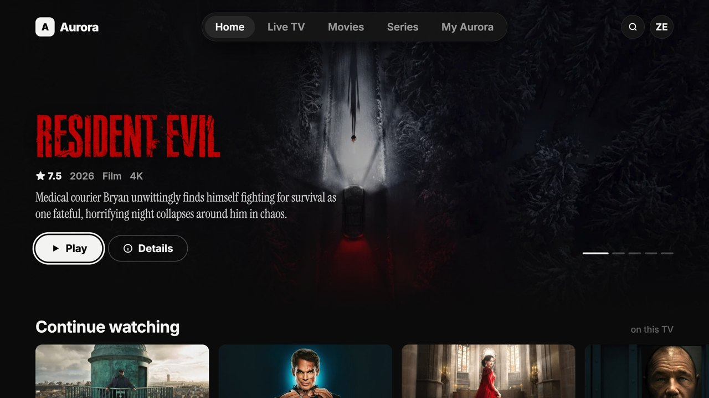
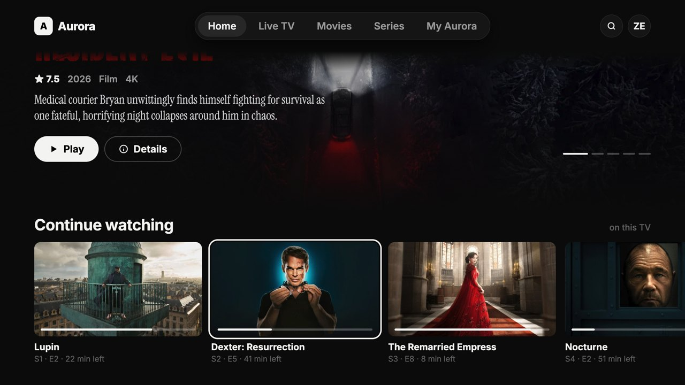
From Basement
1 · Basement
- Black and white; the artwork is the only colour
- Floating pill menu across the top, white pill buttons
- Giant outlined Top 20 numerals that light up on focus
- Category tiles and a genre word-strip
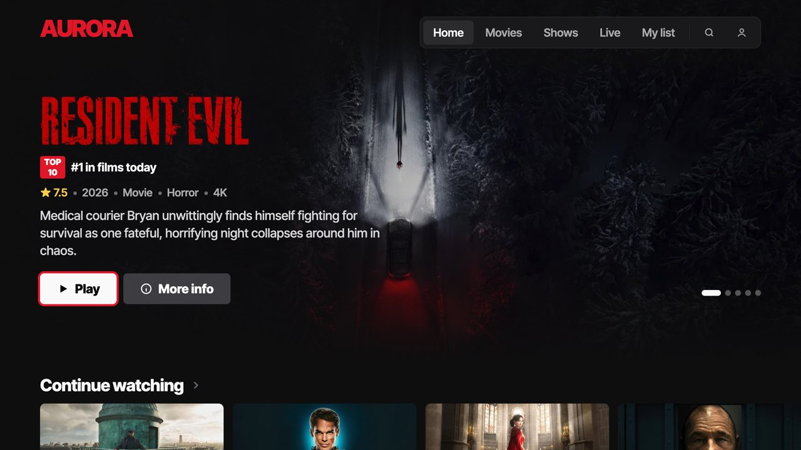
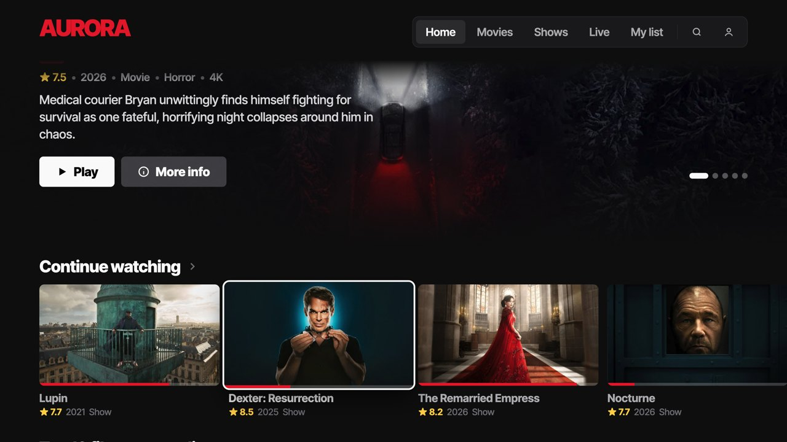
From Movy, Cinejoy, 7Movies
2 · Cinema
- Dense and loud: landscape cards with rating, year and type under each
- Red means new or now: progress bars, "New episode", Top 10 chips
- Compact menu in the top right; the hero does the selling
- Coloured category tiles
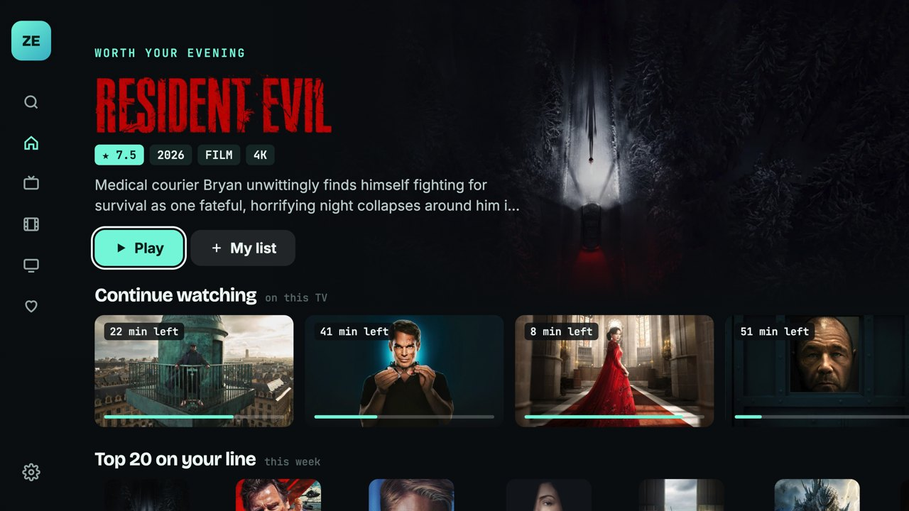
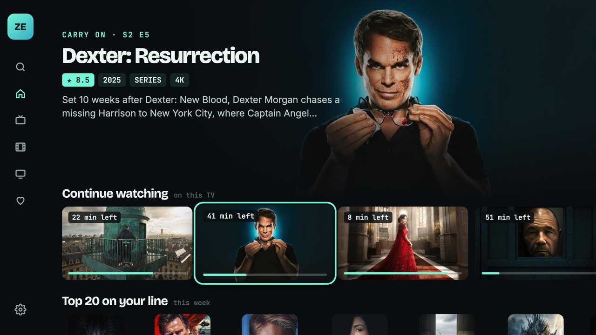
Aurora's own, with Google TV's structure
3 · Aurora
- Keeps your mint and your mono type
- A side rail that opens with labels when you press Left
- A spotlight that becomes whatever you are on
- Small dense rows underneath; Arabic categories set right-to-left
Three more, from the GitHub projects
Same engine and data. streamXie is MIT-licensed, so its code could be reused with credit; Cinexa and Flixnet carry no licence, so only their design ideas are used here and the code is Aurora's own.
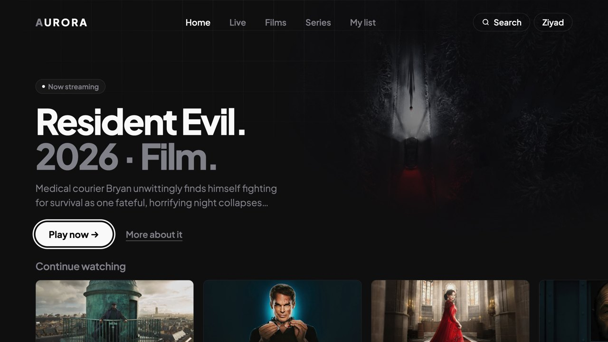
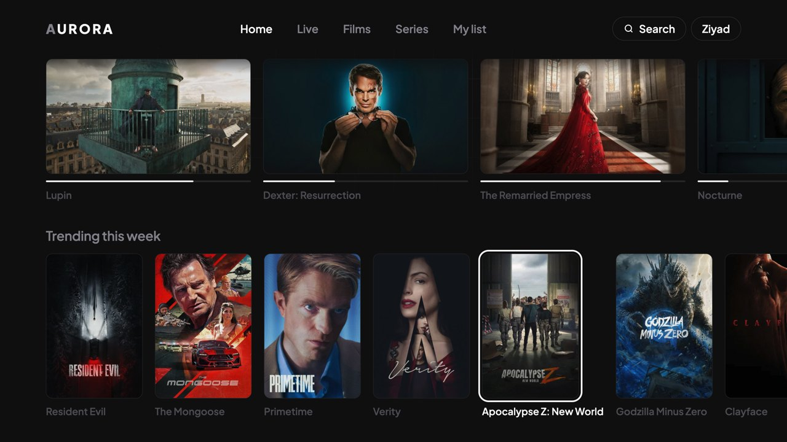
From jackwine0/Cinexa
4 · Cinexa
- Near-black with a faint grid, almost no chrome
- Huge two-tone titles: the name in white, year and type in grey
- One white pill, everything else is a text link
- Posters quiet until focused
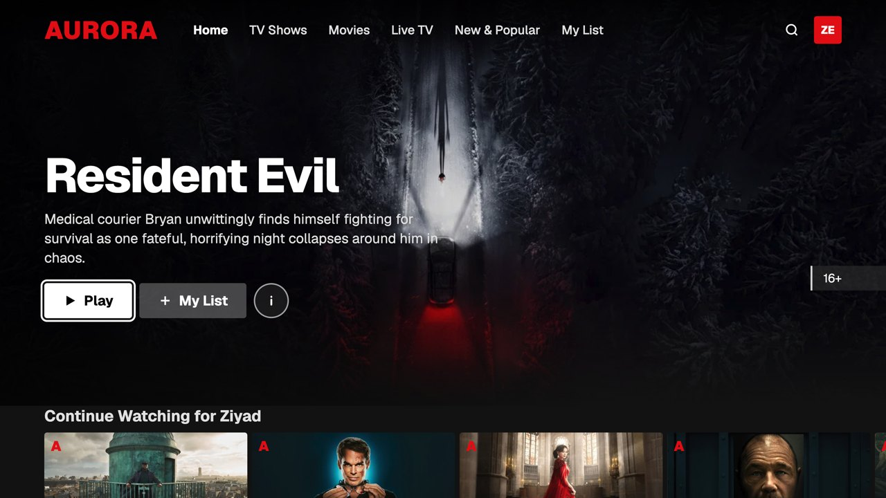
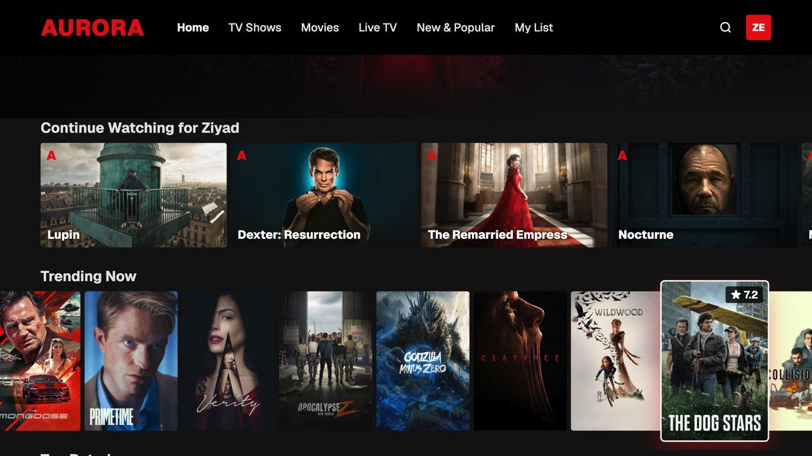
From cloudxplorer/Flixnet
5 · Flixnet
- Netflix grammar played straight: red wordmark, text links
- Title set in type over a slowly zooming backdrop
- Tight rows; the focused poster grows out of the row
- Details open as a card over the page
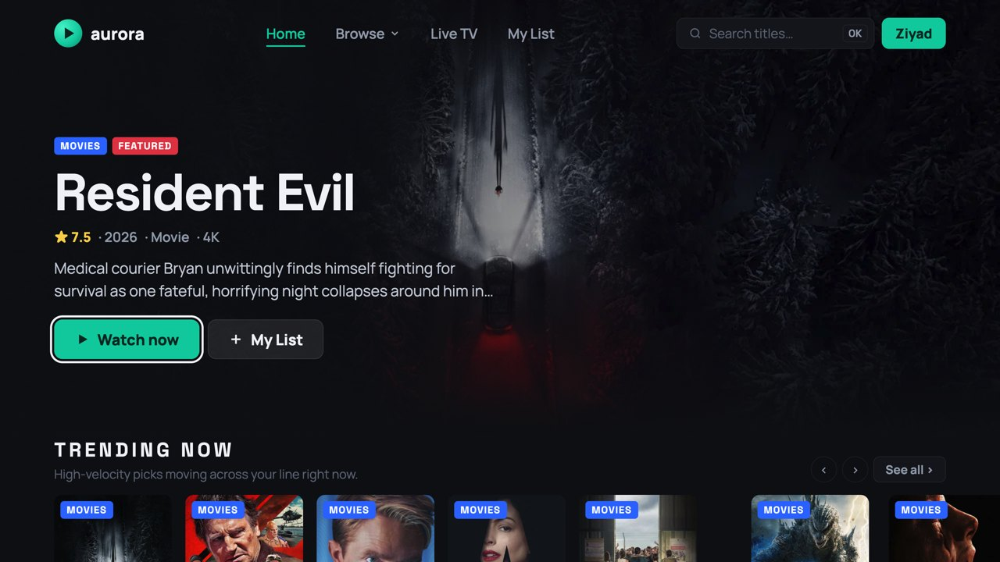
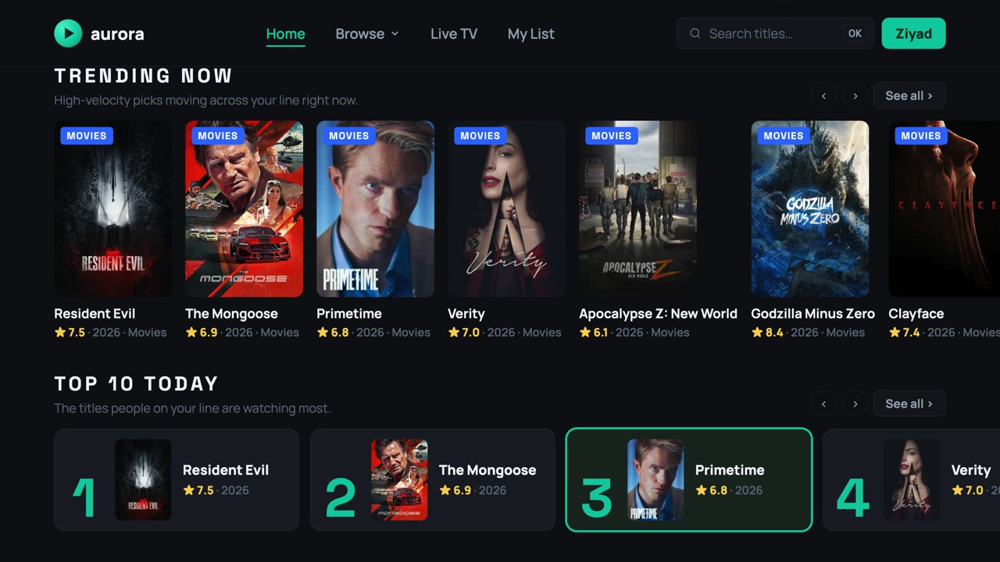
From Matsumiko/streamXie-ui (MIT)
6 · streamXie
- Teal accent and a search field always in the bar
- UPPERCASE section titles, each with a line saying why
- Coloured badges on every poster: Movies, Series, Anime, Arabic
- Top 10 as a list of cards with big numbers
Every page is drawn at 1920×1080 — the television's real pixel grid — and scaled to fit this window.